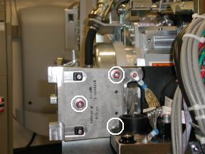
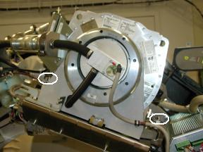
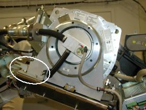
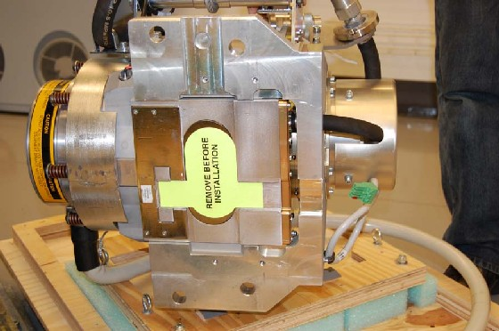
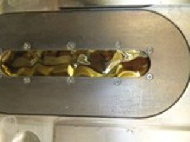

Operating Documentation
Direction 5193574-800, Rev# 22
LightSpeed 7.X Service Methods
Module Version 10.0, Version Date 11/19/13
Operating Documentation |
| Required Persons | Preliminary Reqs | Procedure | Finalization |
|---|---|---|---|
| 1 | N/A | 12.0 (LS7.X), 15.7 (LS8.X) | 1.5 hours |
This document provides the necessary steps to replace and configure the X-Ray tube for imaging.
| Item | Qty | Effectivity | Part# | Manufacturer | |
|---|---|---|---|---|---|
| CT Service Hoist Kit | 1 | - | 5149069 (Non-CE); 5192679 (CE) | - | |
| CT Service Post and Boom | 1 | - | - | - | |
| Torque Wrench and Socket Drive with 10mm Hex Bit, 5mm Hex Bit and 12 inch Extension | 1 | - | - | - | |
| 3mm and 5mm Allen Wrenches | 1 | - | - | - | |
| Flat Blade Screw Driver | 1 | - | - | - | |
| 0.45 N-m or 4 lbf-in Torque Driver with a Flat Blade Driver Bit | 1 | - | - | - | |
| Spanner Wrench | 1 | - | - | - | |
| See Tools and Test Equipment Section for each Procedure defined in Section 4.3 | - | - | - | ||
| Item | Qty | Effectivity | Part# | Manufacturer |
|---|---|---|---|---|
| Tube Mounting Hardware Kit | 1 | - | Shipped with Replacement Tube | - |
| High Voltage Well O-Ring | 1 | - | Shipped with Replacement Tube | - |
| Mineral-Based Dielectric (Transformer) Oil | 1 Quart | - | Shipped with Replacement Tube | - |
| Syringe | 1 | - | 5343337 | - |
| Dry Wipes or Paper Towel | - | - | - | |
| Latex Gloves | - | - | - | |
| Ty-wraps | - | - | - |
| Item | Qty | Effectivity | Part# | Manufacturer | |
|---|---|---|---|---|---|
| Tube | 1 | - | See Gantry Parts List | See Gantry Parts List | |
| ||||
| POTENTIAL FOR ELECTRIC SHOCK | ||||
| VOLTAGES MAY BE PRESENT | ||||
| USE PROPER LOCKOUT/TAGOUT PROCEDURES BEFORE REPLACING COMPONENTS. |
| ||||
| POTENTIAL FOR PERSONAL INJURY (PINCH, CRUSH, ENTANGLEMENT OR IMPACT INJURIES ARE POSSIBLE.) | ||||
| GANTRY HAS ROTATING ASSEMBLY | ||||
| USE THE GANTRY ROTATIONAL LOCK, TO PREVENT UNCOMMANDED MOTION OF THE GANTRY ROTATING ASSEMBLY. |
| ||||
| Follow ALL required safety and PPE procedures customary for your organization when working on this product. | ||||
| ||||
| The heat exchanger may take on excessive amounts of coolant due to thermal expansion. If the tube is not allowed to cool prior to tube change, the system will not scan and the heat exchanger will require replacement. Wait at least 1 hour after the last scan before disconnecting the tube from the heat exchanger. | ||||
| NOTE: | Prior to removal of the failed tube, check for insert failure by manually slowly rotating the gantry through a full 720 degrees of rotation both clockwise and counterclockwise. If the sound of moving debris or broken glass is heard, replace tank and heat exchanger at the same time as tube. |
| Condition | Reference | Effectivity |
|---|---|---|
For Performix Pro VCT 100 X-ray tube. | - | - |
Recommend procedure completion by GE trained service personnel. | - | - |
Move the table to its home position.
Remove the right side gantry cover.
Turn off [HVDC ENABLE], [AXIAL DRIVE ENABLE], and [120 VAC ENABLE] switches on Service Switch Panel.
Remove scan window, gantry left side cover, gantry top covers and gantry front cover.
Remove M12 bolts holding right front gantry cover mounting bracket (See Illustration 1) with 10mm hex bit socket drive and 12 inch extension.
| NOTE: | It may be necessary to tilt the gantry back to remove the third bolt (not normally installed). |
Illustration 1: Mounting Bracket

Remove power to system. See Equipment Service - Lockout-Tagout-PPE from Safety section.
Rotate gantry such that High Voltage Tank is in 3 o'clock position.
Engage rotational lock. See Equipment Service - Lockout-Tagout-PPE from Safety section.
Cut Ty-wraps on Inverter and Auxiliary Box clamps and remove High Voltage cable from clamps.
Loosen High Voltage cable locking ring with spanner wrench.
Remove High Voltage cable candlestick and place a cover over candlestick.
With Dry Wipes, soak up the oil in the High Voltage Tank receptacle.
Place a cap or paper towel in top of receptacle to prevent residual oil spillage and dirt from contaminating receptacle.
Remove Failsafe C-spacers from left and right sides of Tube with a 5mm Allen Wrench ( See Illustration 2).
| NOTE: | Keep hardware. |
Illustration 2: Fail Safe Collimator C-Spacers

Disengage rotational lock. See Equipment Service - Lockout-Tagout-PPE from Safety section.
Rotate gantry such that X-Ray Tube is in 3 o'clock position.
Engage rotational lock. See Equipment Service - Lockout-Tagout-PPE from Safety section.
| NOTE: | CRUSH POINT. IF THE GANTRY IS NOT SECURELY LOCKED, UPON REMOVAL OF THE X-RAY TUBE, THE GANTRY WILL VIOLENTLY ROTATE DUE TO WEIGHT IMBALANCE. ATTEMPT TO ROTATE THE GANTRY BY HAND AND ENSURE IT IS SECURELY LOCKED. |
Carefully cut Ty-wraps and disconnect thermal sensor cable from Heat Exchanger Power Interface Board J7 connector.
Remove dial-mounting bracket with a flat blade screw driver (See Illustration 3).
Illustration 3: Dial Mounting Bracket

Carefully cut Ty-wraps and disconnect anode stator cable from Auxiliary Box J1 connector.
Remove clamp holding anode stator cable to Auxiliary Box.
| NOTE: | Keep clamp hardware. |
Remove Z-Alignment adjuster block assembly with a 3mm Allen Wrench.
| NOTE: | Keep hardware. |
Remove Pump-to-Tube quick-disconnect safety mechanism bolts with a 3mm Allen Wrench.
| NOTE: | Discard quick-disconnect safety mechanism bolts. New hardware is delivered with new tube. |
Align quick-disconnect pin with slot and disconnect Pump from Tube.
Remove Heat Exchanger-to-Tube quick-disconnect safety mechanism bolts with a 3mm Allen Wrench.
| NOTE: | Discard quick-disconnect safety mechanism bolts. Hardware is delivered with new tube. |
Align quick-disconnect pin with slot and disconnect Heat Exchanger from Tube.
Insert lifting post into gantry frame and attach boom and hoist.
Disconnect Smart ID cable from Tube Smart ID board and cut Ty-wrap holding cable to Tube lifting bracket.
Connect hoist hook to Tube lifting point and remove all slack in chain.
| NOTE: | Ensure hoist joint is centered directly above tube with chain hanging vertically. |
| NOTE: | Do not overtighten chain. |
| NOTE: | Tube should not move when mounting bolts are removed. |
Remove two bottom M12 mounting bolts with 10mm hex bit socket drive and 12 inch extension.
| NOTE: | Discard mounting bolts and washers. Mounting hardware is delivered with new tube. |
Remove two upper M12 mounting bolts with 10mm hex bit socket drive and 12 inch extension.
| NOTE: | Discard mounting bolts and washers. Mounting hardware is delivered with new tube. |
| NOTE: | Be careful not to damage fragile copper filter on tube window. |
Remove cover from new Tube crate, flip it over and place it on floor below suspended old tube.
| NOTE: | Cover becomes base of container for returning old tube from field. |
Place old Tube on crate cover for shipping (See Illustration 4) and remove hoist hook from Tube lifting point.
Illustration 4: Hoisting Tube

Secure old Tube to Tube crate cover using adjustable straps.
| ||||
This step is only for removing plastic window from Collimator input (Tube-side) port. Do not remove plastic window from Collimator output (patient-side) port. |
Before installing new Tube, check Collimator Tube-side port on interposer plate.
| NOTE: | If port is covered by Lexan (plastic) window, remove plastic by following Lexan Removal procedure. |
Allow new Tube to warm to room temperature before installation.
Place new Tube crate on floor near gantry where it can be accessed by hoist.
| NOTE: | Place Tube crate on floor so that Tube does not hit gantry or technician when lifted from Tube crate. |
Remove Tube crate center section and attach to Tube crate cover holding old Tube.
Remove adjustable straps from new Tube.
Attach hoist hook to Tube lifting point and lift new Tube free from Tube crate.
| NOTE: | CRUSH POINT: Tube lies on its side in Tube crate and will flip 90 degrees when it is raised. |
| NOTE: | Use care when hoisting Tube to avoid equipment damage. |
With Tube suspended, remove protective cover and visually inspect copper filter (See Illustration 5).
Illustration 5: Remove Protective Cover for Inspection

| NOTE: | Copper filter should be clean, dent-free and scratch-free. |
| NOTE: | Copper filter should show no signs of overheating. Refer to Illustration 7 |
| NOTE: | Slight discoloration is acceptable. |
| NOTE: | If contamination is visible (see Illustration 6), proceed to Collimator Cleaning Procedure. |
| NOTE: | If scratches or dust are visible, copper filter must be replaced. |
Illustration 6: Extremely Contaminated Copper Filter

Illustration 7: Overheated copper filter

| NOTE: | Tube casing should slide in between Collimator frame fingers. |
| NOTE: | When attaching Tube, be careful with copper filter. It should be free of debris, scratches and dust. Particles create artifacts in image by affecting copper filter attenuation properties. |
Using new pre-assembled mounting hardware shipped with Tube, align Tube mounting through-holes with Collimator frame mounting points.
| NOTE: | POTENTIAL FOR PATIENT INJURY. X-RAY TUBE IS ON ROTATING ASSEMBLY. SELECT PROPER BOLT KIT FROM TUBE CRATE, BASED ON SYSTEM TYPE. NEVER MIX MOUNTING HARDWARE TYPES. |
| NOTE: | EJECTION HAZARD. TUBE MAY EJECT IF IMPROPER MOUNTING HARDWARE COMBINATION USED. READ FOLLOWING INSTALLATION INSTRUCTIONS CAREFULLY TO ENSURE PROPER MOUNTING HARDWARE IS USED. |
Hand turn four M12 mounting bolts into Tube holes a few turns.
| NOTE: | Make sure Tube is laying flat. Using ISO adjustment bolt to move interposer plate up or down can aid in getting Tube to lie flat. |
Detach hoist hook from Tube lifting point.
Disengage rotational lock. See Equipment Service - Lockout-Tagout-PPE from Safety section.
Rotate Tube to 12:00 o'clock position.
Engage rotational lock. See Equipment Service - Lockout-Tagout-PPE from Safety section.
Move Tube until it settles into its centered position on interposer plate.
Visually inspect that Tube position is close to centered in Z-direction.
Tighten each M12 mounting bolt on Tube assembly in a cross pattern configuration, with a 10mm hex bit socket torque wrench and 12 inch extension, to the following torque value.
| 49 lbf-ft | 66 N-m | 590 lbf-in | 680 kg-cm |
Place original Tube crate base on top of crated old Tube and secure its locking hardware.
Move Tube crate away from gantry to provide easier access.
Remove hoist/boom/post assembly from gantry.
Connect Smart ID cable to Smart ID board and Ty-wrap cable to Tube lifting bracket.
Connect Heat Exchanger hose male quick-disconnect to Tube female quick-disconnect.
Connect Pump hose female quick-disconnect to Tube male quick-disconnect.
Secure Heat Exchanger-to-Tube and Pump-to-Tube quick-disconnect safety mechanisms with hardware shipped with Tube.
Tighten each safety mechanism M6 bolt, with a 5mm hex bit socket torque wrench, to the following torque value.
| 7.3 lbf-ft | 9.9 N-m | 88 lbf-in | 101 kg-cm |
| NOTE: | If safety mechanism rotates in relation to quick-disconnect, tighten slowly until it stops rotating. |
| NOTE: | Do not over-torque M6 bolts. Doing so can cause quick-disconnect to leak. |
Attach Z-Alignment adjuster block assembly with a 3mm Allen Wrench.
Connect anode stator cable to Auxiliary Box J1 connector.
Place clamp around anode stator cable exposed shield and attach clamp to Auxiliary Box with a 3mm Allen Wrench.
Attach dial-mounting bracket to Tube and tighten each captive screw with a flat blade bit torque driver to 0.45 N-m or 4.0 lbf-in.
Connect thermal sensor cable to Heat Exchanger Power Interface Board J7 connector and appropriately secure with Ty-wrap(s).
Attach 2 Failsafe C-spacers to right and left sides of Tube with a 5mm Allen Wrench (See Illustration 2).
| NOTE: | PATIENT OR OPERATOR CRUSH HAZARD. IMPROPER MOUNTING CAN RESULT IN TUBE EJECTION AND SERIOUS INJURY. MOUNT TUBE ACCORDING TO INSTRUCTIONS, INCLUDING NEW MOUNTING HARDWARE AND C-SPACERS. |
Disengage rotational lock. See Equipment Service - Lockout-Tagout-PPE from Safety section.
Rotate gantry such that High Voltage Tank assembly is in 3 o'clock position.
Engage rotational lock. See Equipment Service - Lockout-Tagout-PPE from Safety section.
Replace High Voltage Tank well O-ring with new O-ring shipped with Tube.
Perform Securing HV Cable.
Install right gantry front cover bracket (See Illustration 1).
Manually rotate gantry, at least one full revolution, and verify that no rubbing occurs.
Turn on [120 VAC ENABLE], [AXIAL DRIVE ENABLE] and [HVDC ENABLE] switches on Service Switch panel.
Press [ESTOP RESET] on Service Switch panel and wait until scan hardware is reset.
| ||||
| If the GSI option is not installed on your system, it is not
necessary to perform the GSI calibrations. If tube replacement was due to a leak in Tube Oil Cooling system, perform Tube Oil Cooling System Air Removal. | ||||
| ||||
| Allow at least a 10 minute cooling period for the tube before completing step 19, turn off the 120 VAC power to the gantry. Failure to allow a proper tube cool-down period may result in tube damage. | ||||
Turn off [HVDC ENABLE], [AXIAL DRIVE ENABLE], and [120 VAC] switches on Service Switch panel.
Install gantry front cover, gantry top covers, gantry left side cover and scan window.
Turn on [120 VAC], [AXIAL DRIVE ENABLE] and [HVDC ENABLE] switches on Service Switch panel.
Press [ESTOP RESET] on Service Switch panel and wait until scan hardware is reset.
Install right side gantry cover.
Save Generator Runtime Parameters (See Save Restore Generator Runtime Parameters)
Save System State
Prepare tube crate for returning old tube.
| NOTE: | Use provided labels to identify old tube as good or defective. |
| NOTE: | If tube is being restocked as good, re-band cardboard to crate using strapping instructions provided in crate. |